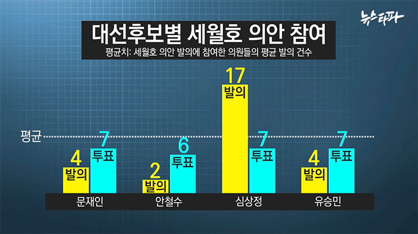

후보자 분석
출처 : 국회, 언론
●문
●홍
●안
●유
●심
1. 국회 내 활동

4. 공약 평가
출처 : 경향신문X경제정의실천시민연합 [뉴스]
0. BIG DATA
`
민주주의와 자본주의를 채택한 나라에서 대통령 한 명이 모든 것을 변화시키기는 힘들다.
민주적 의식 형성과 주체적인 사상들이 확립되어야만 비로소 변화가 일어난다.
누가 안보를 망치는가 변화없는 재래식 무기, 머릿수 채우기식 군대가 현대전에서 과연 의미가 있는것인가?
이는 적폐청산과 정말 별개일까?
과거없이는 미래도 있을 수 없고 말은 행동을 이기지 못한다.
진정한 혁명이나 체제변화는 대통령 얼굴이 바뀌는 게 아니라 국민의 의식 수준의 변화에서부터 오는 것이 아닌가
민주주의에서 국민이 올바른 결정을 내리기 위해서는 왜곡되지 않은 충분한 정보가 있어야 한다.
양자구도 : 둘 중 하나를 고르는 것이 최선일까?
정당기준으로 후보를 뽑는 우리는 문제가 없는가 ?
둘중하나의 변함없는 선택지는 악마가 자라나기 충분한 조건이다.
문제는 결국 얼굴이 바뀌는게 아니라 우리가 그동안 배워온 생각의 틀을 깨는 것이 혁명의 진정한 두 번째 발걸음이 아닌가 ?
아인슈타인- 같은 일을 반복하면서 다른 결과를 기대하는 것은 미친 짓이다.
잘못된일을 국가가 나서 덮는다면, 언젠가는 곪아 터지고, 국민끼리 분열되기 마련이다.
나라 팔아먹는 외교부 장관과 국방장관 [뉴스]